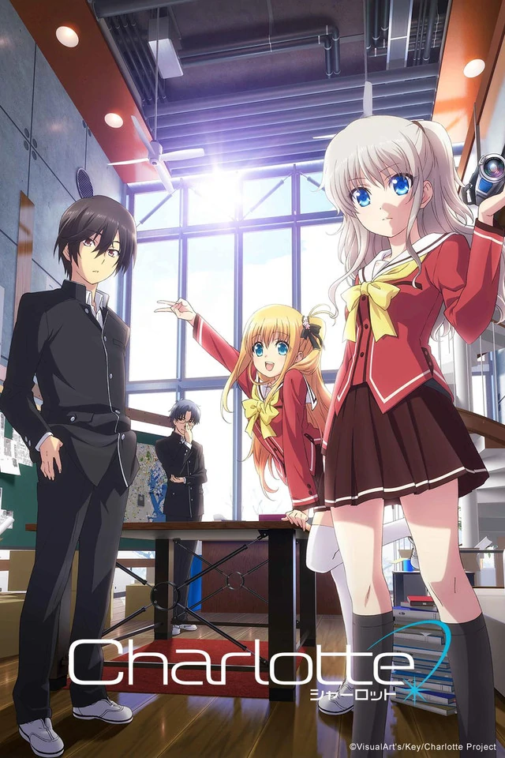
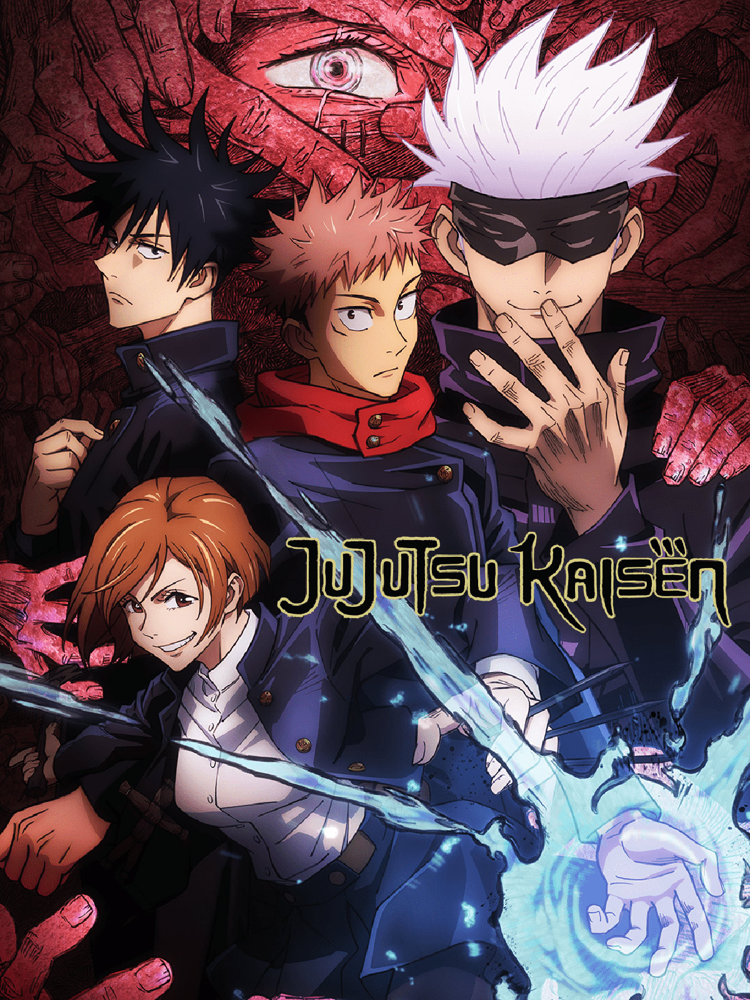
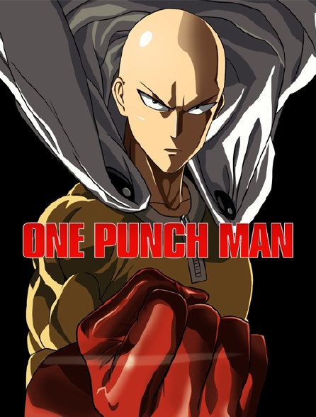

Tous les animés






Un vent de rouille dévastateur a transformé le Japon en un désert où chacun lutte pour survivre. Pour sauver son maître mourant, Bisco Akaboshi, entreprend un voyage à la recherche d’un champignon miraculeux dont on dit qu’il élimine cette rouille. Au cours de son périple, il croise la route d’un jeune médecin, Milo Nekoyanagi, cherchant également un moyen de soigner sa sœur aînée. Tous les deux promettent de parvenir à sauver ceux qu’ils aiment...
EP01 - Séquence d'assassinat 00:00 EP02 - Séquence de Base-ball 22:00 EP03 - Séquence Karma 44:00 EP04 - Séquence adulte 1:06:00
Naofumi est projeté dans un monde proche en tout lieu d’un jeu de rôle d’heroic fantasy. Mais alors que d’autres héros ont été dotés d’armes offensives redoutables, Naofumi hérite d’un bouclier aux capacités limitées pour progresser dans ce jeu où le danger peut surgir à chaque instant. Trahi par sa partenaire et vilipendé par la population, le jeune homme ne peut désormais compter que sur lui-même pour survivre dans cet univers hostile… et peut-être sur une jeune fille désœuvrée aux ressources insoupçonnées.
Un groupe d’écrivains mène des enquêtes souvent dangereuses dans le plus grand secret, là où la police et l’armée refusent d’intervenir, à l’aide de pouvoirs issus de leurs propres ouvrages. Atsushi Nakajima a été chassé de son orphelinat. Sans-le-sou, il croise la route de ces étranges détectives tandis qu’ils pourchassent un tigre mangeur d’hommes terrorisant la population…
Dans un lointain futur, le Terre est en ruines et l’humanité s’est retranchée dans une ville fortifiée mobile, Plantation. Un quartier est dédié à la formation de jeunes pilotes qui ne connaissent rien du monde extérieur. Leur seul but dans la vie est d’apprendre à piloter des robots, les Franxx, afin d’affronter un mystérieux ennemi géant mais invisible.
'histoire se déroule au prestigieux collège Kunugigaoka. Koro-sensei est une étrange créature qui déclare avoir subitement détruit 70 % de la Lune. Il prévoit ensuite de détruire la Terre en mars prochain pour des raisons inconnues. Il se présente ensuite au gouvernement japonais et annonce vouloir devenir le professeur principal de la classe 3-E du collège Kunugigaoka pour pouvoir les former en tant qu'assassins et éliminer une cible bien particulière : lui-même, leur propre enseignant. Les élèves de cette classe auront donc pour objectif d'assassiner leur professeur afin de sauver la Terre, la récompense étant de 10 milliards de yens. Cependant un problème se pose : Koro-sensei se déplace à Mach 20, possède des tentacules à fonctions infinies et, de plus, c'est un excellent professeur ! Le gouvernement va accepter pour pouvoir le garder à l’œil à condition que Koro-sensei ne fasse pas de mal aux élèves ; mais les élèves réussiront-ils leur mission avant la date impartie ?
En entrant au lycée, Nasa Yuzaki a eu le coup de foudre pour la belle et mystérieuse Tsukasa. Lorsqu'il lui avoue ses sentiments, elle lui répond : « J'accepte de sortir avec toi, mais seulement si on se marie. » Quelques années plus tard, tout juste arrivés à l'âge adulte, Nasa et Tsukasa vont enfin commencer leur vie amoureuse !
Lucy réalise à l’aide de Natsu et Happy sa première mission en tant que membre de la guilde de Fairy Tail.
Lucy, une jeune mage rencontre Natsu et son chat Happy : l’aventure commence pour nos héros.
Souffrance, regrets, humiliations... les sentiments négatifs que ressentent les humains se transforment peu à peu en fléaux se cachant dans notre existence. Sévissant dans le monde entier, ils sont capables d'entraîner les gens dans de terribles malheurs et, parfois même, jusqu'à la mort. De plus, ces créatures ne peuvent être exorcisées que par un autre fléau. Lycéen ordinaire, Yuji Itadori est toutefois doté d'une force physique hors du commun. Un jour, pour sauver un ami attaqué par un fléau, il mange un des doigts du démon à deux visages, devenant à son tour un fléau. Dès lors, il partage son corps avec le démon...
Naruto est enfin devenu un Ninja et pourra mener sa première mission en compagnie de deux autres jeunes ninja. Ses co-équipiers sont Sakura Haruno et Sasuke Uchiwa. Naruto a le coup de foudre pour la belle Sakura mais elle ne prête attention qu’à Sasuke. A l’inverse de Naruto, Sasuke est non seulement beau et sympa mais aussi un Ninja d’élite aux compétences étendues. Cette situation n’amusant pas Naruto, il décide de comploter contre Sasuke.
L'histoire se déroule au prestigieux collège Kunugigaoka. Koro-sensei est une étrange créature qui déclare avoir subitement détruit 70 % de la Lune. Il prévoit ensuite de détruire la Terre en mars prochain pour des raisons inconnues. Il se présente ensuite au gouvernement japonais et annonce vouloir devenir le professeur principal de la classe 3-E du collège Kunugigaoka pour pouvoir les former en tant qu'assassins et éliminer une cible bien particulière : lui-même, leur propre enseignant. Les élèves de cette classe auront donc pour objectif d'assassiner leur professeur afin de sauver la Terre, la récompense étant de 10 milliards de yens.
L'histoire est centrée sur Yû Otosaka, un lycéen dont le pouvoir de posséder temporairement le corps d'autres personnes vient de se réveiller. Celui-ci attire l'attention de Nao Tomori, présidente du bureau des étudiants d'une école servant de refuge pour les jeunes dotés de ce type de pouvoirs.
'histoire de One Piece se déroule dans un monde océanique où des pirates aspirent à une ère de liberté et d'aventure connue sous le nom de « l'âge d'or de la piraterie ». Cette époque fut inaugurée par l'exécution de Gol D. Roger, le légendaire Roi des Pirates, à Loguetown, sa ville natale.
En entrant au lycée, Nasa Yuzaki a eu le coup de foudre pour la belle et mystérieuse Tsukasa. Lorsqu'il lui avoue ses sentiments, elle lui répond : « J'accepte de sortir avec toi, mais seulement si on se marie. » Quelques années plus tard, tout juste arrivés à l'âge adulte, Nasa et Tsukasa vont enfin commencer leur vie amoureuse !
Dans un lointain futur, le Terre est en ruines et l’humanité s’est retranchée dans une ville fortifiée mobile, Plantation. Un quartier est dédié à la formation de jeunes pilotes qui ne connaissent rien du monde extérieur. Leur seul but dans la vie est d’apprendre à piloter des robots, les Franxx, afin d’affronter un mystérieux ennemi géant mais invisible.
À Tokyo, sévissent des goules, monstres cannibales se dissimulant parmi les humains pour mieux s’en nourrir. Étudiant timide, Ken Kaneki est plus intéressé par la jolie fille qui partage ses goûts pour la lecture que par ces affaires sordides, jusqu’au jour où il se fait attaquer par l’une de ces fameuses créatures. Mortellement blessé, il survit grâce à la greffe des organes de son agresseur… Remis de son opération, il réalise peu à peu qu’il est devenu incapable de se nourrir comme avant et commence à ressentir un appétit suspect envers ses congénères.